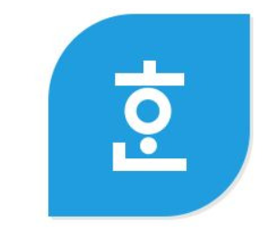

ZEST ENGLISH BANK
Login
PDF를
한글(HWPX) 파일
로 변환
한글 문서 표준 포맷인 HWPX로 쉽고 빠르게 변환하세요.

변환할 PDF 파일을 이곳으로 끌어다 놓거나 클릭하세요.
최대 20MB 이하의 PDF 파일 권장
filename.pdf
파일 변경
기본 레이아웃 (Beta)
전체 디자인과 서식을 유지합니다.
2단 시험지 분리
왼쪽 단을 모두 읽은 후 오른쪽 단을 읽도록 분리합니다.
텍스트 정밀 추출 (OCR)
이미지 기반 시험지의 텍스트를 복원합니다.
한글 파일(HWPX)로 변환하기 🚀
💡 한글 변환 참고사항
PDF의 텍스트 위치를 분석하여 한글 표준 문서 포맷인 `.hwpx`로 변환을 시도합니다.
베타 서비스
: 현재 한글 변환은 텍스트 정렬 위주로 지원되며, 복잡한 표나 수식은 변형될 수 있습니다.
보안을 위해 모든 처리는 고객님의 메모리에서만 이루어집니다.